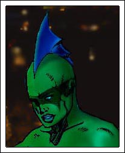

Utter pandemonium breaks out in the museum as it's thrown into darkness with the sound of glass shattering.Still on the ceiling,
Darkfin is able to sense the movement with her sonar and zeros in on three guards making off with the Duquesa's Tears.
Gliding down to the floor, she gives chase through the main hall and out into the sculpture garden.
Guard #1 (Looking over his shoulder) WHAT IN THE HELL IS THAT?
Guard #2: (Pulling out his gun) JUST KEEP MOVING

Before he can get off a round, the mysterious sea creature with the woman's body grabs his hand, crushing his wrist with
one simple squeeze.
Guard #2 AAAAAAHHHH
Darkfin quickly searches him for the necklace. Turning up nothing, she lifts the guard with ease and hurls him into an adjacent
courtyard. Fear and confusion grip the first guard as he tries to decide between helping his associate or fleeing. The
sight of the sleek green glistening marine monster leaping over to him in one, smooth move freezes the man in his tracks.
Darkfin (Now looking right into his eyes) Give me the necklace and I'll give you your life
Guard #1 (Trembling and losing bladder control) I... I... don't... I don't have it... I SWEAR
The feel of the cold, slimy hands searching his body is too much for the guard to endure and he passes out in her arms. The
sound of automatic gunfire fills the air and the splattering of the man's blood and brains hits Darkfin in the face. Twisting
and tumbling to safety, she locates a separate shooter behind a bush and charges. He fires more shots but the bullets bounce
off of her protective scales like dried macaroni shells. One, however, does pierce her head fin membrane, evoking a rage
reaction. With two swift moves, the gun is smashed against a cement wall and the shooter is sent flying into a large sculpture
where he is impaled on the long, metal spikes.
Darkfin (Climbing up and searching the shooter for the necklace) The third guard must have it
She tests the wind and jumps off in that direction.
Back inside the museum, the emergency lights are activated, revealing knocked over tables, discarded masks and spilled food.
Six people are lying on the ground from being trampled in the stampede to get out of the building. Morrigan quickly assesses
the situation and runs out of the main hall.
Penny MOM
Lydia Renselier lies on the floor, covered with glass from the shattered display case. She struggles to get up as her daughter
and husband run to her side.
Lydia (Noticing the cuts all over her) What happened?
Penny DON'T MOVE - SOMEONE GET AN AMBULANCE
George (Covering his flapper-clad wife with his vintage coat) Just stay calm, Lyd
The Mayor of Barcelona, surrounded by security, hurries over to them.
Mayor THE DUQUESA'S TEARS, THEY'RE GONE
Lydia WHAT? - NOOO
George (Running off) I'll go call the police
Penny DAD, GET BACK HERE
Lydia (Looking around at the scene in front of her) Forget him, Penny - go help those people!
Penny I'm not leaving you!
A now wigless Karl von Meer comes over to the mother and daughter.
Karl Sr. Are you two alright?
Lydia (Pushing at girl's arm) PLEASE HELP THEM, PENELOPE, I CAN'T
Penny (Trying not to cry) Mr. Von Meer, could you please stay with my mom?
Karl Sr. (Stooping beside them) Sure thing, Honey
Casting off her bent dragonfly wings, Penny goes over to one of the injured on the floor as Captain Phelps takes charge,
despite his drunken buccaneer appearance.
Craig EVERYONE, PLEASE REMAIN CALM - I REPEAT, REMAIN CALM - THE SITUATION IS UNDER CONTROL
KJ, Ona Rosa and a couple of doctors at the party, shed themselves of their costume accessories and spread out to assist
the injured. Sandy pokes his helmeted head out from behind a statue.
Javier Is it safe?
One Rosa GET OVER HERE AND HELP US
Penny finishes taking care of an injured woman and goes over to an older man lying motionless on the floor.
Penny (Removing his costume) Oh my God, it's Mr. Braemar - I don't think he's breathing!
Two menacing cowboy boots stand in front of her, prompting Penny to look up and see Brad's nonchalant face.
Brad What happened, did you knee him in the nuts too?
Penny QUICK, CHECK HIS PULSE
Brad (Doing so) What pulse?
Penny (Positioning herself over his chest) SHIT, DO YOU KNOW CPR?
Brad I know how to get someone started again after an overdose
Penny (Preparing to start chest compressions) Clear his throat, tilt his head back and pinch his nose - when I
tell you, breathe into his mouth
Brad I'll tell you what, YOU breathe into this corpse's mouth and I will pound on his chest!
Penny (Trading places) FINE, LET'S MOVE
Griffin and Pauline, still immaculate in their costumes, make their way over to Karl and Lydia.
Pauline This is an absolute disaster!
Karl Sr. (Holding Lydia's trembling hand) Now is not the time to state the obvious, Dear
Mrs. von Meer is taken aback by her husband's tone.
Griffin Where's Erika?
Karl Sr. I thought she was with you?
The eldest Martel brother hurries off.
Pauline (To Lydia) Darling, do you want me to get you some water?
Lydia Just see if you can find my other crutch... and my husband
Standing in a corner holding his hockey stick for protection, Douglas Martel comforts his wife, Ursula as she wipes shrimp
fondue off of her gold dress and carries on uncontrollably.
Douglas Shh, Sweetie - you can cut the acting showcase, everyone is too busy to pay attention to you
Ursula (Bopping him hard on the arm) You insensitive stone, can you not see how upset I am?
Douglas (Spotting Lydia) Yeah, right - I need to go help my sister!
The second Mrs. Douglas Martel grabs his arm, causing him to spin back around.
Ursula She is your sister, I AM YOUR WIFE - I am frightened and I wish to go home, NOW
Douglas But
Ursula Our son is waiting for us
Observing others surrounding a now-standing Lydia, the Martel patriarch is pushed aside by several police officers and paramedics.
Douglas (Sighing) Let's go
A 1977 red metallic Pontiac Firebird sits with its windows fogged up in a remote part of the museum parking lot. Unaware
of the chaos nearby, Anita is getting hot and heavy with the cocktail waitress. Three loud pounds on the hood startle them.
Craig ANITA
Anita (Cracking the window) CRUNCH, ARE YOU PLASTERED?
Craig (Throwing open the car door) GET OUT OF THE CAR, GET OUT OF THE CAR, GET OUT OF THE CAR
The startled cocktail waitress stumbles out, trying to find her panties.
Craig MOVE IT, MOVE IT
Forgetting her panties, the cocktail waitress takes off in tears while Anita comes close to decking her captain.
Anita WHAT THE FUCK IS WRONG WITH YOU?
Craig WE NEED TO GET AIRBORNE
Anita (Fixing her rumpled bar wench look) I'M NOT GOING ANYWHERE DRESSED LIKE THIS
Craig (Grabbing her shoulder and pointing to the museum) GET THE PUBIC HAIR OUT OF YOUR TEETH AND TAKE A LOOK AROUND
Anita Jesus Christ, what happened? - ONI
Craig (Jumping in the driver's seat) Your sister is fine
Anita WHY ARE THERE AMBULANCES, WHAT THE HELL HAPPENED?
Craig GIMME THE KEYS, LET'S GO
The reluctant lieutenant follows his orders and the car squeals out of the parking lot. Using the emergency frequency on
his radio, the captain starts barking orders.
Craig I WANT ALL AVAILABLE SHIPS TO CONVERGE ON SECTOR NINE IMMEDIATELY
Anita (Watching the KCON newsvan pass them in the opposite direction) I'm still waiting for an explanation
Craig The Duquesa's Tears were stolen right in front of everyone
Anita What happened to security?
Craig Good question - the lights went out, it went down too fast
Anita Where are we going? - shouldn't we be there to help?
Craig THINK - if you just stole a multi-million dollar necklace in front of 250 people, what would you do?
Anita Get out of town... and into International Waters
Craig (Stepping on the gas) That's why we need to be in the bird
Gracie and Zach pull up to the entrance of the museum as the injured are being taken away in ambulances. With video camera
and notepad in tow, the two rush inside.
Gracie Do you see Morri?
Zach Not yet
Gracie Damn, that girl was on the money again!
Zach I don't get it, how did she know?
Gracie Said some weirdo tipped her off with a freaky poem
Zach (Motioning to a bystander) I need to start asking questions, if I see her, I'll let you know
Gracie (Taping footage) Go ahead, I'll check back with you in ten
The petite, pudgy field producer pauses for a moment and scans the faces.
Gracie Where are you, Morrigan McBride?
Now in the sculpture garden, the faux Lois Lane carefully looks around. She feels a wet tapping on her shoulder and goes
to touch it. Her finger returns with blood. Directly above her is the shooter's body impaled on the spike.
Morrigan (Covering her mouth) OH GOD
Not taking her eyes off the sight above her, she stumbles back and nearly falls over the bullet-riddled body of the guard.
Before Morrigan can scream for help, she spots a cloaked figure hurrying across a field with a large sack. Her instincts
tell her to follow and she obeys.
Bolting towards the bay, Darkfin uses her keen sense of smell to pursue the third guard that eluded her. She finally spots
the culprit near a jetty and tackles the woman to the ground.
Darkfin (Searching her) Where is the necklace?
The smiling guard says nothing and spits in her captor's face.
Darkfin (Slapping her hard) I'm not going to repeat myself
With one crack of her jaw, the guard swallows something and begins to convulse. She expires within seconds.
Darkfin (Kicking the body into the water) Great
With the throbbing in her wounded fin increasing, she takes a deep breath and prepares to dive into the welcoming sea. A
strange, male voice echoes in back of her.
Figure (Holding up the pearl necklace) Looking for this?
Darkfin spins around and studies her cloaked opponent.
Figure (Tossing her the Duquesa's Tears) It's all yours - we have what we came for
Catching it, she briefly glances at the necklace and notices the missing clasp. Fanning out her arm fins, she sets herself
for an attack as does the figure. Making the first move, Darkfin throws herself at the tall man and tries to grab a hold
of him. He's too quick and lands a blow to her ribs. She kicks his legs out from under him but he flips away.
Darkfin (Scrambling to her feet) SHOW YOURSELF
He appears, as if out of thin air, behind her at the end of the jetty.
Figure Don't waste our time
Darkfin (Whirling around) That's a nice trick, I have one as well
With a simple hand motion, Darkfin summons her trident. It comes soaring out of the water, into its owner's grasp.
Darkfin (Aiming at her target) You have ten seconds to explain before I skewer your spleen
Figure (With a laugh in his voice) Another time, that I promise
Losing patience, Darkfin bangs the bottom of the trident down for the charge.
Darkfin (Hurling it) I gave you a chance
The trident nears it target and suddenly veers off into one of the rocks. For the first time in her altered state, Darkfin
feels a small pang of fear as the cloaked opponent moves towards her. Bearing her pointy barracuda teeth and running right
at the figure, she passes through him at the moment of impact and ends up in the ocean.
Darkfin (Quickly surfacing) NO
Even with heightened senses and extraordinary abilities, the nautical oddity cannot track her new, ethereal enemy. Still
clutching the necklace, she pauses in thought as the fog thickens around her.
Darkfin Yet another complication